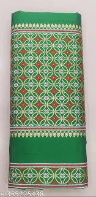

An eminent geographical indication, Jainsem sarees find their home in the state of Meghalaya.
The jainsem is a traditional dress worn by women of the Khasi tribe of Meghalaya, India. It is a long piece of cloth made of silk or cotton, covering the body from the waist to the ankles. The jainsem is typically worn with a blouse and a shawl called Tapmohkhlieh. The lower garment worn as a wrapper by Khasi women is called Jain pein
Jainsem is a traditional costume for women in Meghalaya, India that is often made from mulberry silk, a local fabric. The silk saree is wrapped in two ways: 1. Mulberry silk The world's most popular silk, which makes up 80% of silk textiles. The mulberry silkworm, Bombyx mori, feeds on the leaves of the mulberry plant, Morus indica. 2. Thick cotton cheque cloth Tied on one shoulder to protect the jainsem from getting spoiled while working
